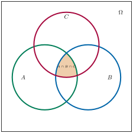

Aufgabe 4.4
Man entwickle eine Additionsformel für drei (nicht notwendig disjunkte) Ereignisse $A$, $B$ und $C$ (sogenannte «Formel von Sylvester» für $n = 3$):
\[h_n(A\cup B\cup C)=?\]
- Nutzen Sie die bekannte Formel für zwei Ereignisse als Ausgangspunkt
- Setzen Sie $X = A \cup B$ und wenden Sie die Formel für zwei Ereignisse an
- Beachten Sie, welche Anteile mehrfach gezählt werden
- Ein Venn-Diagramm kann bei der Visualisierung helfen
Mit $X = A \cup B$ spielen wir die Frage auf Bekanntes zurück:
\begin{align*} h_n(A \cup B \cup C) &= h_n(X \cup C)\\ &= h_n(X) + h_n(C) - h_n(X \cap C)\\ &= h_n(A \cup B) + h_n(C) - h_n((A \cup B) \cap C)\\ &= h_n(A) + h_n(B) - h_n(A \cap B) + h_n(C) - h_n((A \cap C) \cup (B \cap C))\\ &= h_n(A) + h_n(B) - h_n(A \cap B) + h_n(C)\\ &\quad - [h_n(A \cap C) + h_n(B \cap C) - h_n(A \cap B \cap C)] \end{align*}
Endergebnis: \begin{align*} h_n(A \cup B \cup C) = &\; h_n(A) + h_n(B) + h_n(C)\\ &- h_n(A \cap B) - h_n(A \cap C) - h_n(B \cap C)\\ &+ h_n(A \cap B \cap C) \end{align*}
Visualisierung mit farbigem Venn-Diagramm:

Erklärung des Inklusions-Exklusions-Prinzips:
- Schritt 1: $h_n(A) + h_n(B) + h_n(C)$ - Alle drei Bereiche werden gezählt - Überlappungen werden mehrfach gezählt
- Schritt 2: $- h_n(A \cap B) - h_n(A \cap C) - h_n(B \cap C)$ - Zweifach-Überlappungen werden abgezogen - Der zentrale Bereich $A \cap B \cap C$ wird dreimal abgezogen
- Schritt 3: $+ h_n(A \cap B \cap C)$ - Der zentrale Bereich wird wieder hinzugefügt - Jetzt ist jeder Bereich genau einmal gezählt
Im Video: Etappe 4 · Die Additionsregel bei 10:02